风花雪月记
旅居 · 慢下来的日子
Slow Days in Yunnan没有赶景点的执念，只想找个地方住下来，
沿着洱海慢慢走，坐下来喝杯咖啡，看看云。
大理六天，丽江三天，更像是是旅居。
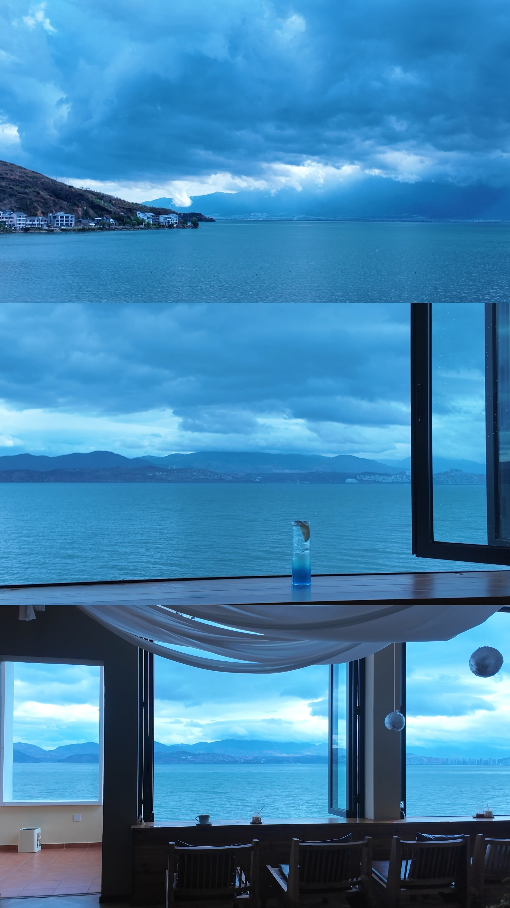
洱海边的海景咖啡厅，蓝色的饮料配蓝色的海。
大理篇
Dali · March 20 — 25洱海 · 住在海边的日子
March 20–21 — Living by Erhai Lake洱海的蓝，每一秒都在变。
坐在洱海边喝咖啡
找了一家正对洱海的海景咖啡厅，整面落地窗外就是湖面。点了一杯蓝色的饮料，跟窗外的洱海撞色了。看云从苍山那边飘过来，再飘走。
丁达尔的光
傍晚的洱海，云层裂开一道缝，光柱穿透下来洒在水面上，是丁达尔效应~
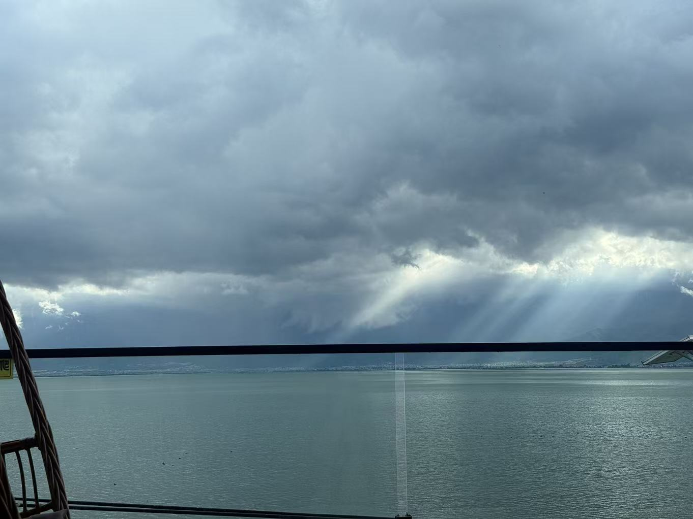
大理不需要攻略，
你只要坐在洱海边，什么都不做，
时间自己就会变慢。
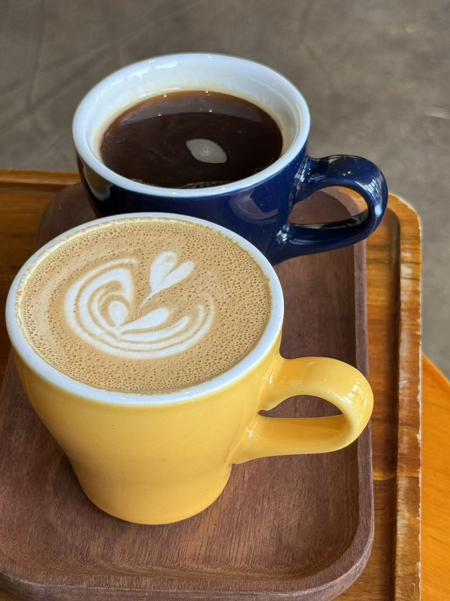
一杯拿铁一杯黑咖，大理的下午从这里开始。
寂照庵 · 最文艺的尼姑庵
March 22 — The Most Beautiful Nunnery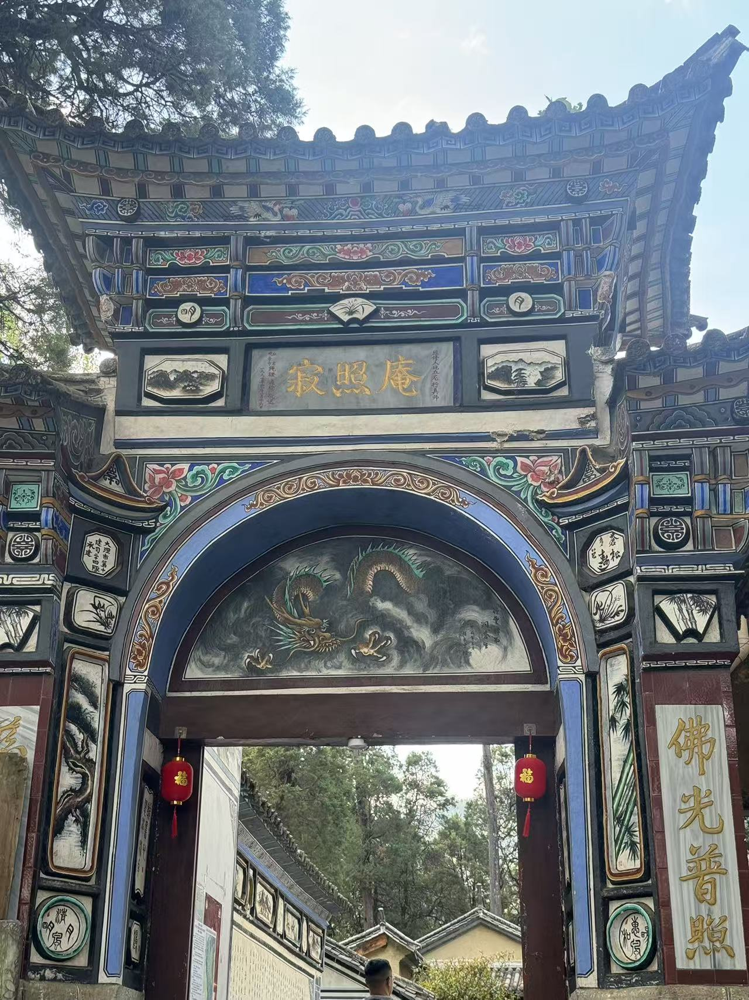
佛光普照，寂照庵
藏在苍山半山腰的寂照庵，被称为「中国最文艺的尼姑庵」。
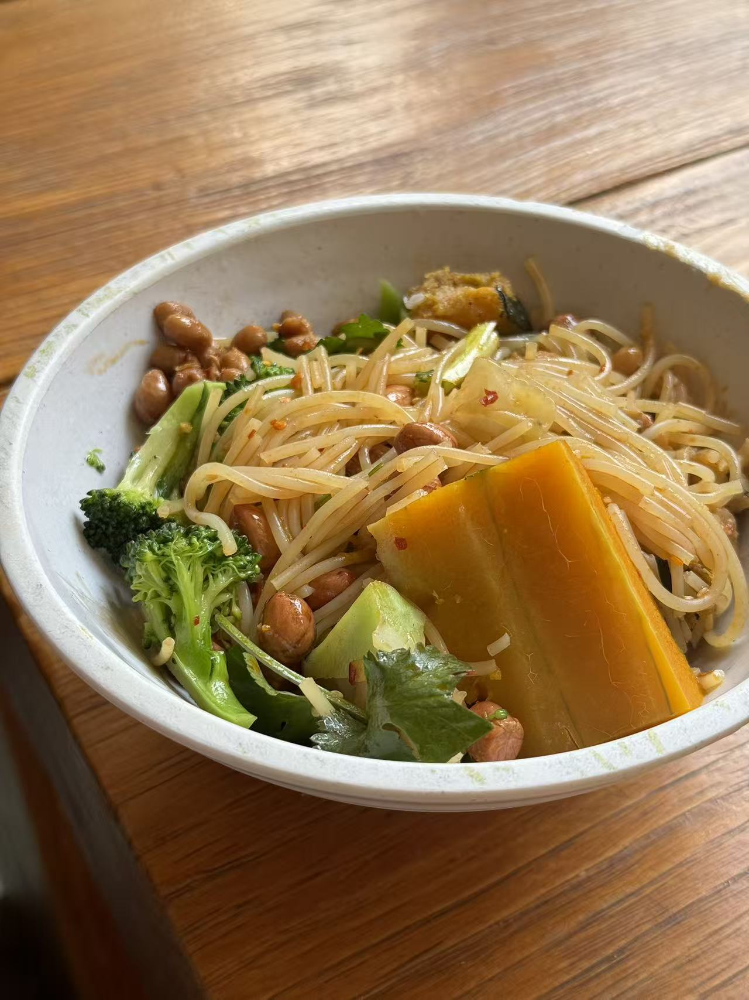
寂照庵的斋饭，简简单单。
吃了一碗斋饭，花生米、南瓜、西兰花，
在半山腰的安静里，什么烦恼都没了。
拓染 · 把花印在布上
March 23–24 — Flower Pounding Dyeing其中之一是鲜花拓染——
把新鲜的花瓣放在布上，用锤子一下一下敲出颜色来。
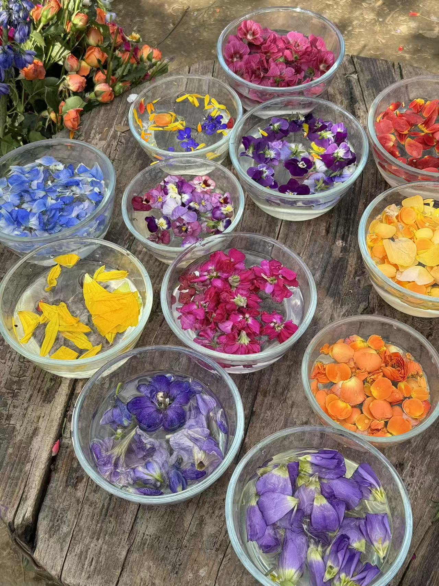
各色花瓣泡在水碗里，等待被「拓」上布面
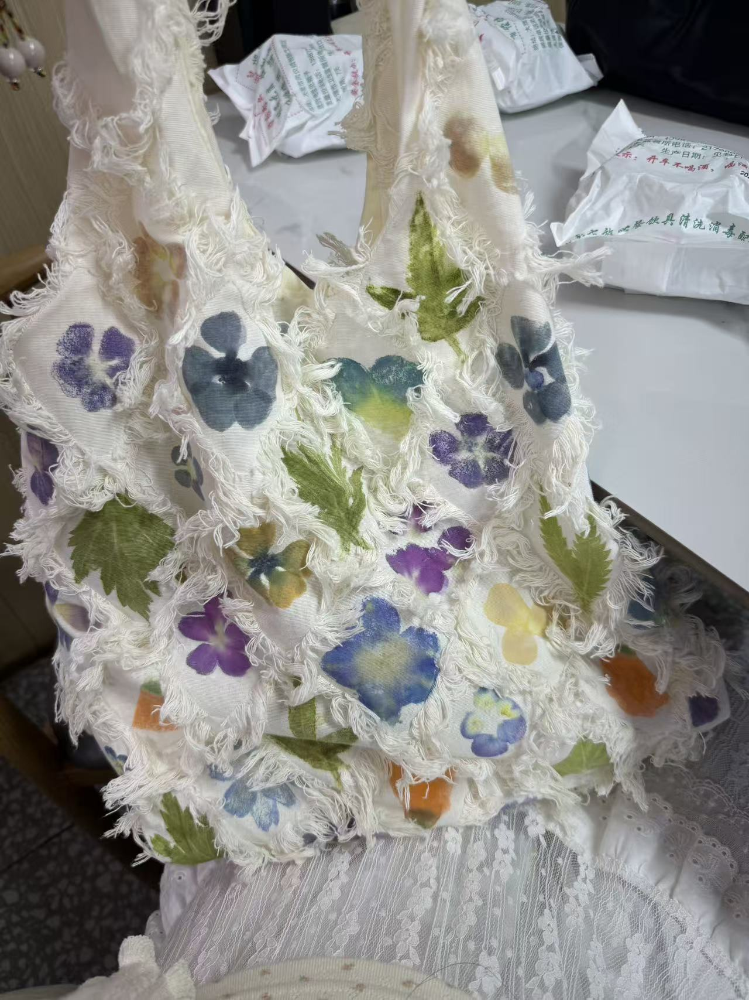
亲手做的拓染帆布包，独一无二
紫色的三色堇、蓝色的蝴蝶花、黄色的雏菊，
每一锤都把花的颜色敲进了布里，
带回家的是一段时光。
丽江篇
Lijiang · March 26 — 28玉龙雪山 · 日照金山
March 26 — Jade Dragon Snow Mountain清晨的日照金山，雪峰被染成了金色。
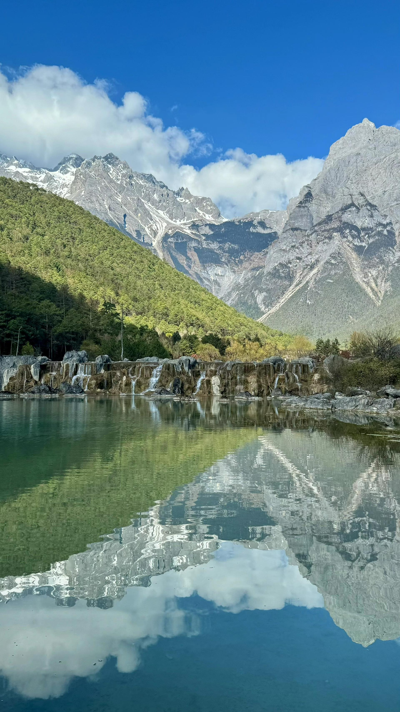
蓝月谷
玉龙雪山脚下的蓝月谷，水蓝得不真实。雪山倒映在湖面上，云从山顶飘过，水面跟着荡漾。
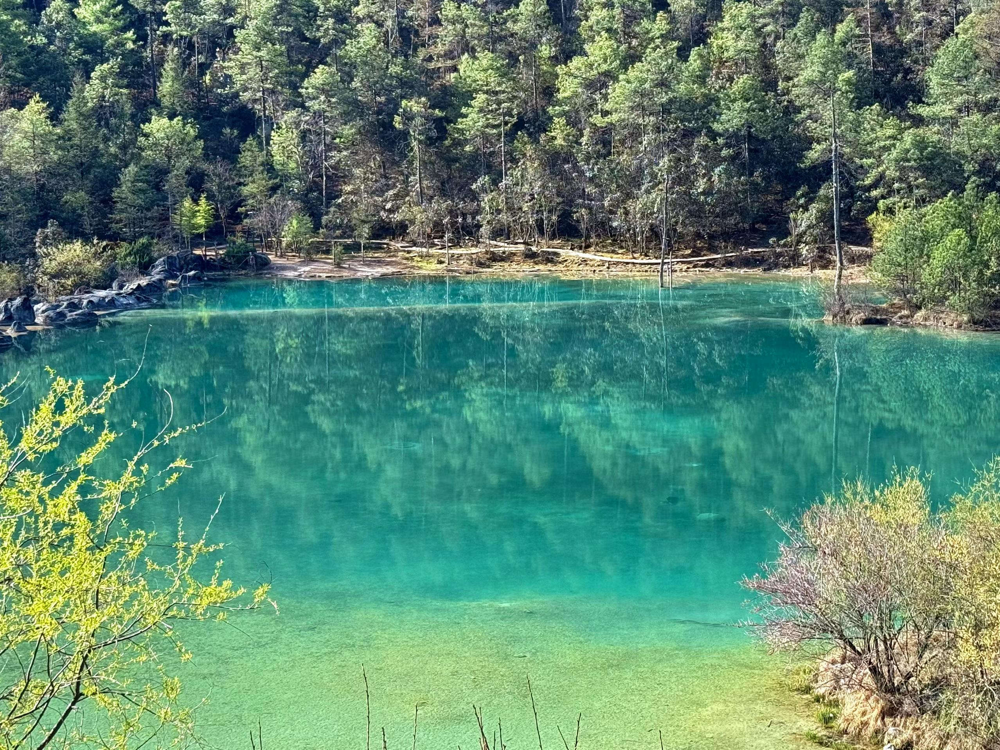
蓝月谷的湖水，翡翠一样的绿。
举🍦对黄昏。
丽江古城 · 写真与新朋友
March 27 — Old Town Photoshoot & New Friends穿上当地的民族服饰，在石板路上茜玉便成了古城姑娘~😊。
还在夜晚的古城街头交到了新朋友。
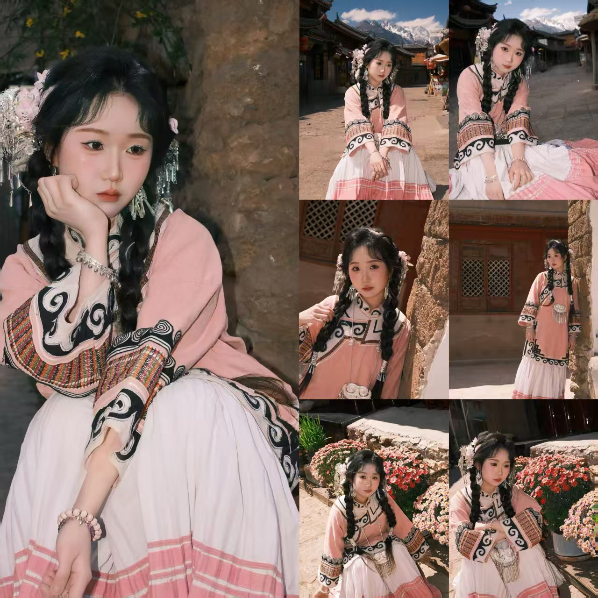
丽江古城写真，少数民族风情。
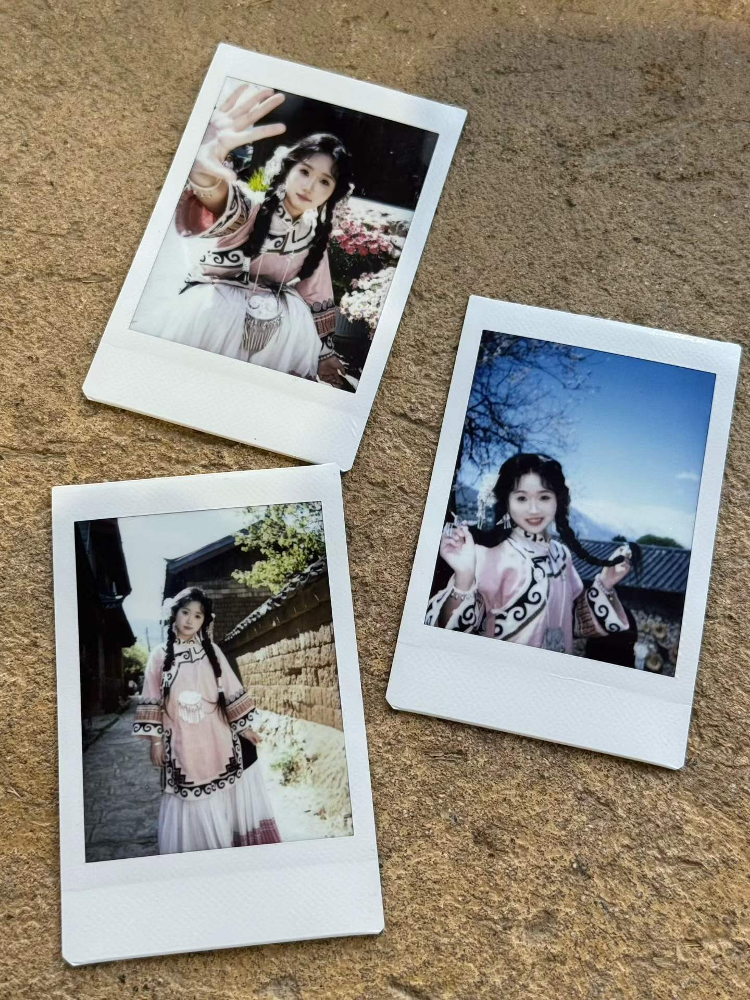
拍立得里的你自己，是最好的纪念
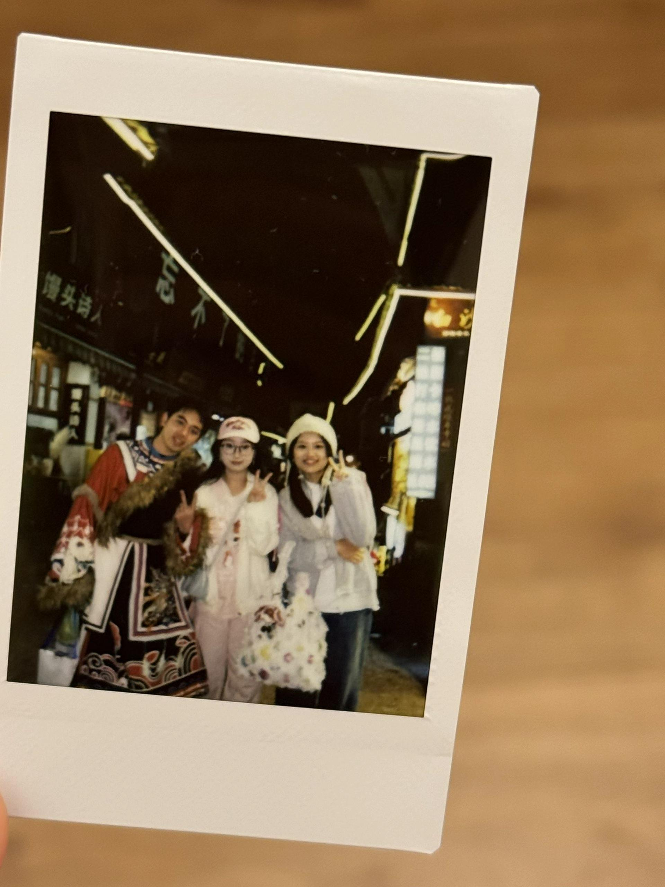
古城夜晚，和刚认识的朋友们拍了一张
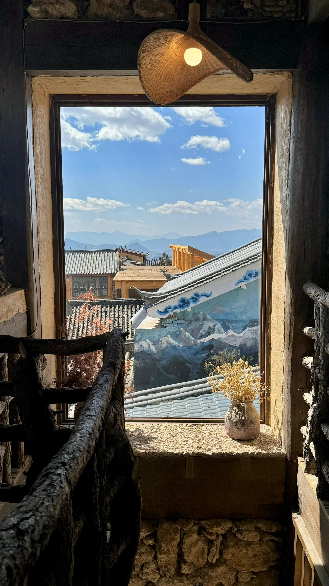
古城客栈的窗，框住了远山和屋顶，还有一瓶干花。
旅行中认识的人，
可能只见一面就各自天涯，
但那一刻的快乐是真的。
白沙古镇 · 可颂与闲逛
March 28 — Baisha & Croissants白沙的可颂
最后一天去了白沙古镇，在一家小面包店发现了超好吃的可颂——原味、香草苹果、香蕉巧克力，每个都想尝。店里还有好多可爱的杯子。
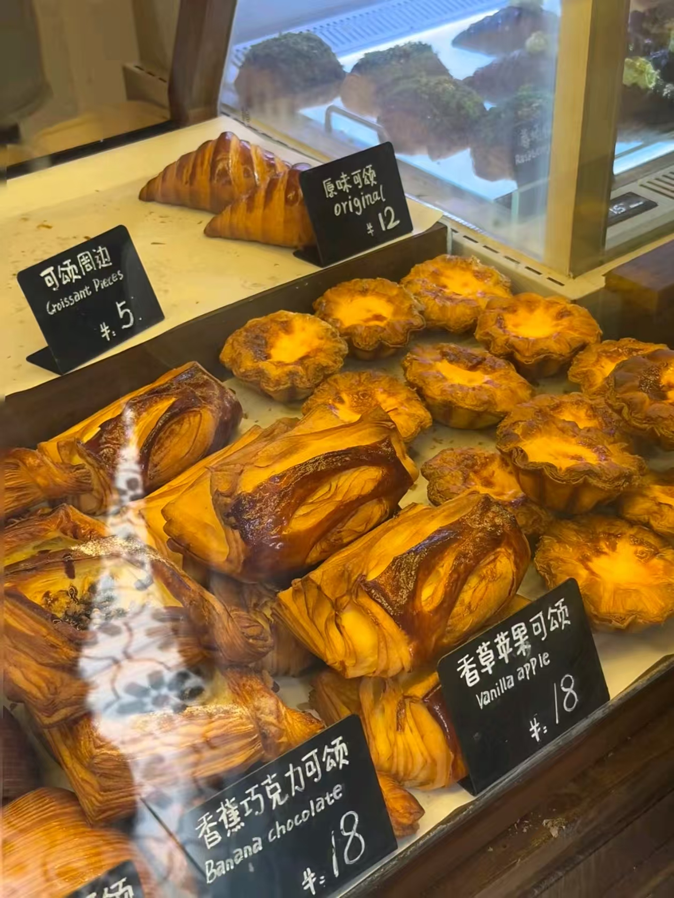
九天，从大理到丽江。
看了洱海的蓝，看了雪山的金，
把花敲进了布里，把回忆装进了相相册里。
一个人的旅行，不孤单，
因为风景和遇见的人，已经足够温柔。
云南之旅，下一站香格里拉。